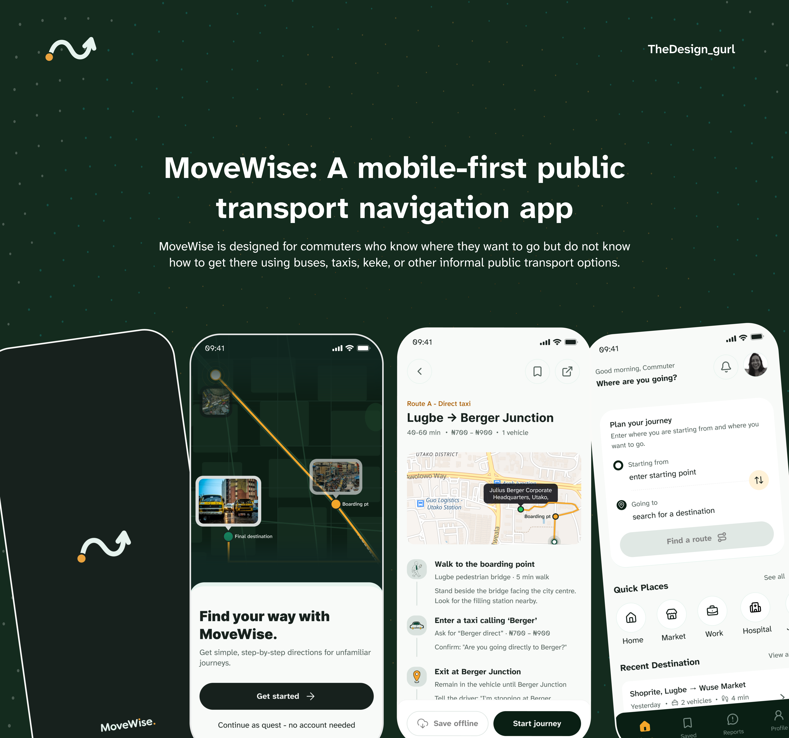
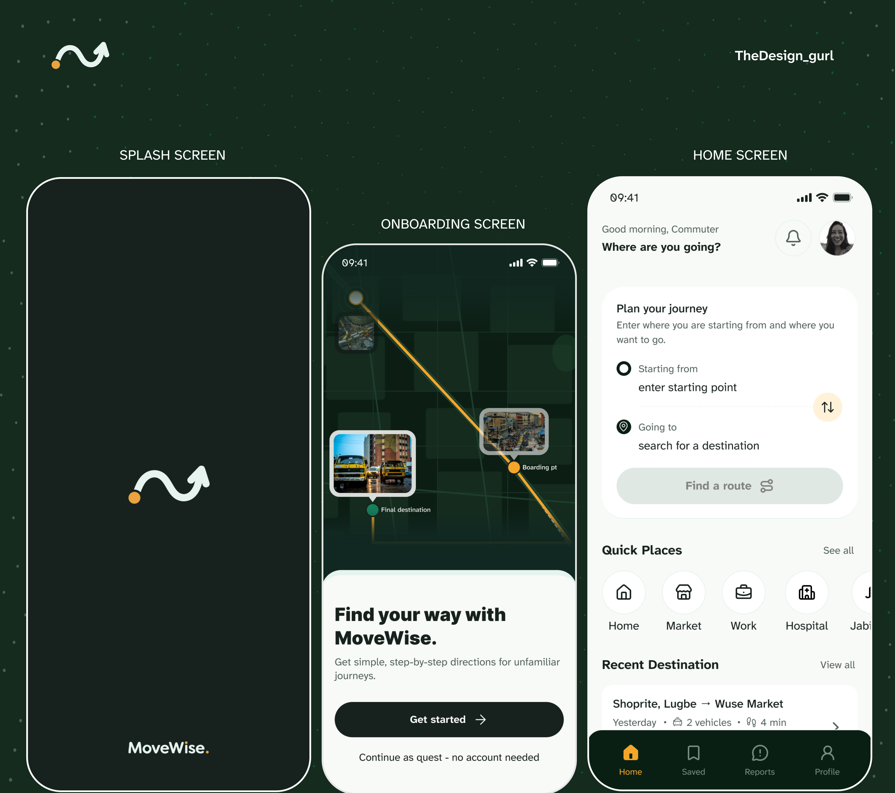
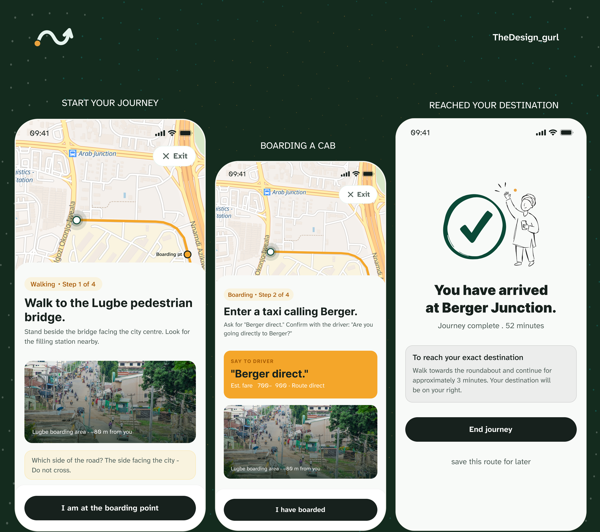

MoveWise
I designed MoveWise to make unfamiliar public transport journeys easier to follow, turning a route on a map into practical steps: where to board, what to ask for, and where to get off.

THE STARTING POINT
The idea came from my own commutes in Abuja. I often knew my destination but still had to work out which vehicle to enter, where to board, what to tell the driver, and where to stop. A map could show me the road; it could not always explain how to make the journey using local transport.
THE DESIGN CHALLENGE
Shared taxis and minibuses do not work like a scheduled train system. Stops can be informal, fares can vary, and directions often depend on the names people use for junctions and landmarks. I needed to make those changing details feel clear enough to use while someone is already on the move.
FROM ROUTE TO ACTION
I structured the route as a sequence of actions rather than a line on a map. The journey screens tell a commuter where to stand, show a nearby landmark, and give them words to use with the driver. They also show an estimated fare and the next point to watch for.
In the Lugbe-to-Berger example, the guidance starts at the Lugbe pedestrian bridge, explains which side of the road to use, then prompts the commuter to ask for “Berger direct.” Each step has one immediate job, so the person does not have to interpret the whole route at once.
SUPPORTING THE JOURNEY
The home screen begins with a simple starting point and destination, alongside quick places and recent journeys. The wider concept includes saved routes, offline access, stop alerts, and community-confirmed updates to help commuters return to a route or keep following it when conditions change.
VISUAL DIRECTION
The dark green and warm yellow make the important route markers easy to spot. I paired maps with large, plain-language instruction cards so the screen answers the commuter’s next question instead of making them study the map under pressure.
The interface designs
What that became.
The screens follow a commuter from their first welcome through route planning, boarding, and arrival.

